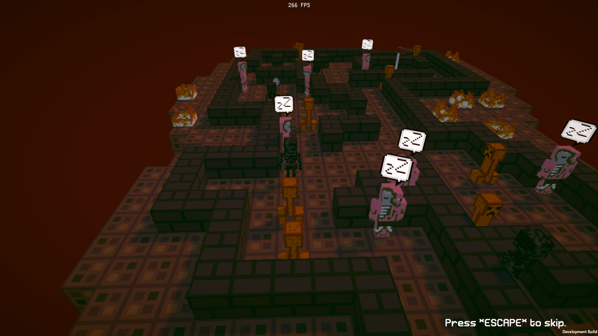
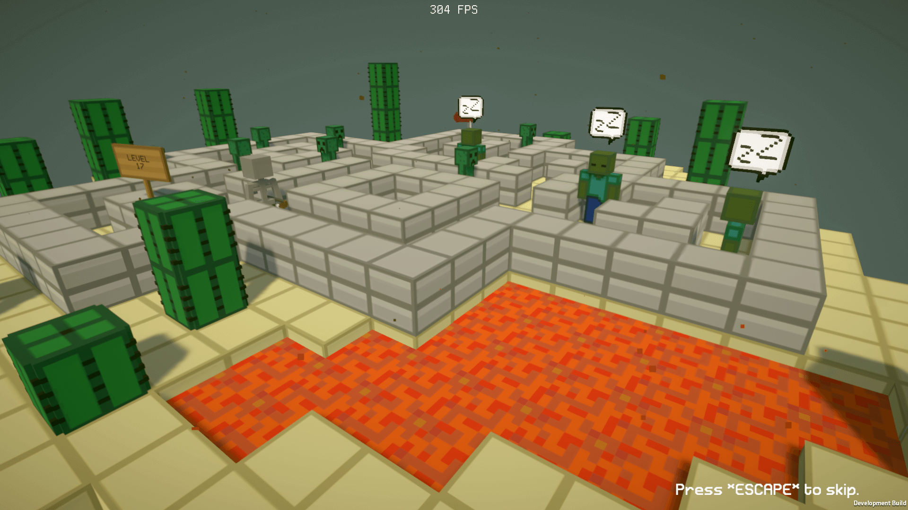
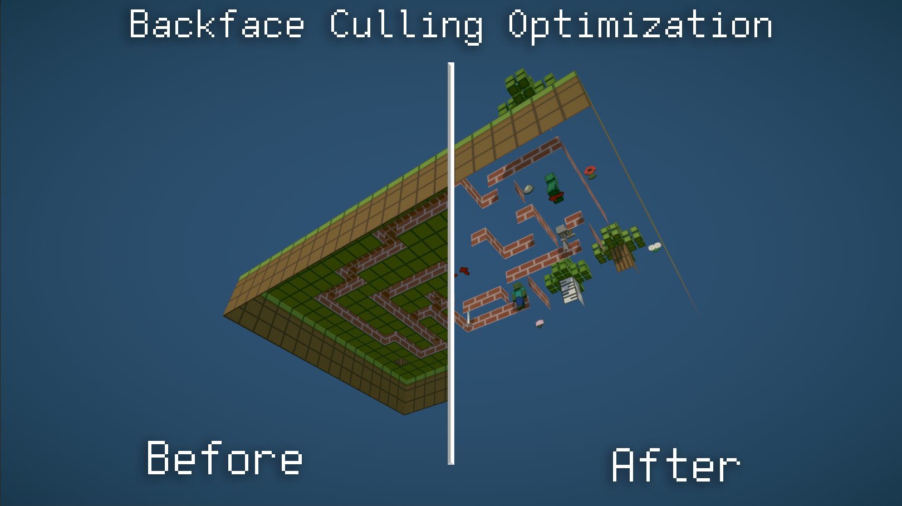

Version 0.8 : Small improvements and fixes !
+ Added a button in bonus level to skip the current level without using the main menu
+ Global improvements in the game code
+ Updated game credits
+ Updated the random messages displayed when winning or losing a level
+ Updated some of the UI icons (upscaled x2)
Fixed Zombie looking direction bug
Fixed Zombie eyes for low settings
Fixed animations bug for low settings
Fixed missing translations
Fixed FPS counter displaying bug
Version 0.7 : Finishing !

+ Added all the remaining levels (from 21 to 60)
+ Added visual feedback for the zombie
+ Added camera shake
+ Added Zombie Pigman
+ Added Wither Skeleton
+ Added Fire Creeper
+ Added fire block
+ Added blizzard ambiance to snow levels
+ Added particles to end levels
+ Added random rain system
+ Added bonus levels (unlocked after finishing all levels)
+ Added a tool to delete save files
+ Optimized Discord Rich Presence dectection (from 50 times/s to 1 time each 2s)
+ Updated game credits
+ Updated settings menu (add gameplay settings)
+ Updated footstep manager
+ Updated golden skin (unlocked after collecting all the eggs)
+ Updated input manager
- Removed desert menu variant
- Removed bug reporting in game launcher
Fixed player damage bug (the player wasn't taking damage at all)
Fixed Zombie sliding bug
Fixed Zombie damaging in tutorial
Fixed tutorial floor textures
Fixed Creeper damage error
Fixed particles bug (particles were still visible in the lowest settings)
Version 0.6 : Desert Update and bug reporting !

+ Added levels 7,8,9,10,11,12,13,14,15,16,17,18,19,20
+ Added tall grass to levels 1-10
+ Added dust particles to levels 11-20
+ Added a new level editor (developer side only)
+ Improved Game Launcher : you can now send a bug report !
+ Improved lava : added particles and sounds
+ Improved creeper AI : the AI can now attack and be killed by another enemy
+ Improved creeper AI Navigation System : small improvements
+ Improved skeleton AI : small optimizations
+ Improved zombie AI : the AI can now attack and be killed by another enemy
+ Improved the shapes of existing levels
+ Improved High settings : small adjustments
+ Improved Levels Managing System
+ Improved Developer Menu : small changes
+ Updated the font of the news feed
+ Updated the project to the latest version of the game engine (Unity 2019.3.0f6)
+ Updated Discord Rich Presence : added time elapsed
+ Updated the update detection of the game launcher
- Removed Ultra settings
- Removed the old level editor
- Removed unused assets (scenes/sprites)
Fixed textures of "Chicken Creeper" playermodel
Fixed FPS display bug : the vsync wasn't detected
Fixed rotation of 2 blocks types
Fixed loading spam issues : the player was able to load several levels at once and crash the game
Fixed player position in level 2
Fixed zombie UI : the UI wasn't looking at the camera
Fixed enemies hitboxes : enemies were able to kill you even after disappearing
Fixed zombie detection : the detection has been nerfed
Fixed blocks of the desert main menu variant
Fixed creeper explosion : the player was able to trigger the explosion several times
Fixed player health : the player wasn't taking damage when colliding with a creeper
Fixed level 10 : a egg was missing
Version 0.5 : Huge models optimizations, game tutorial, new graphics, performance improvements and lot of bugs fixed !

+ Added game tutorial
+ Added levels 5 & 6
+ Added 2 main menu styles for Christmas & Summer
+ Added ambiances sounds
+ Added spruce & birch trees
+ Added piston blocks
+ Added tall grass
+ Added signs
+ Improved framerate with backface culling (29% FPS boost)
+ Improved zombie & skeleton detection
+ Improved scenes loading
+ Improved graphics settings (the game now starts in Medium instead of Ultra)
+ Improved UI animations of the main menu
Fixed screen resolution issue when the game starts
Fixed colors of all the models
Fixed lights issues in the main menu
Fixed graphics settings bug (settings were not applied)
Fixed sound volume options
Fixed game launcher bug (game was not starting without internet connection)
Fixed antialiasing and post processing
Fixed Discord Rich Presence
Fixed Creeper hat position (the hat is no longer visible when the enemy is dead)
Fixed blood particles rotation
Fixed Dialogue System spam issues
Fixed Player models size
Version 0.4 : AI improvements, new website, time events, new music

+ Created custom website
+ Created new music for the main menu
+ Added Zombie AI improvements and bug fixes
+ Added Creeper AI improvements : movement & explosion
+ Added time events : ennemies wear a hat depending of the time period
+ Added missing UI elements
+ Added credit tab to the main menu
+ Added level n°4
+ Improved level management system
+ Minor scripting improvements
Version 0.3 : New enemy, levels optimization & more !

+ Adding the Zombie enemy.
+ Added few animations to the Skeleton enemy
+ Added new UI background to the main menu.
+ Added the game launcher.
+ Added fade animation for each levels.
+ Added custom game cursor.
+ Optimized all the levels block by removing hidden faces.
Version 0.2 : UI renewed !

All the game UI has been entirely renewed !